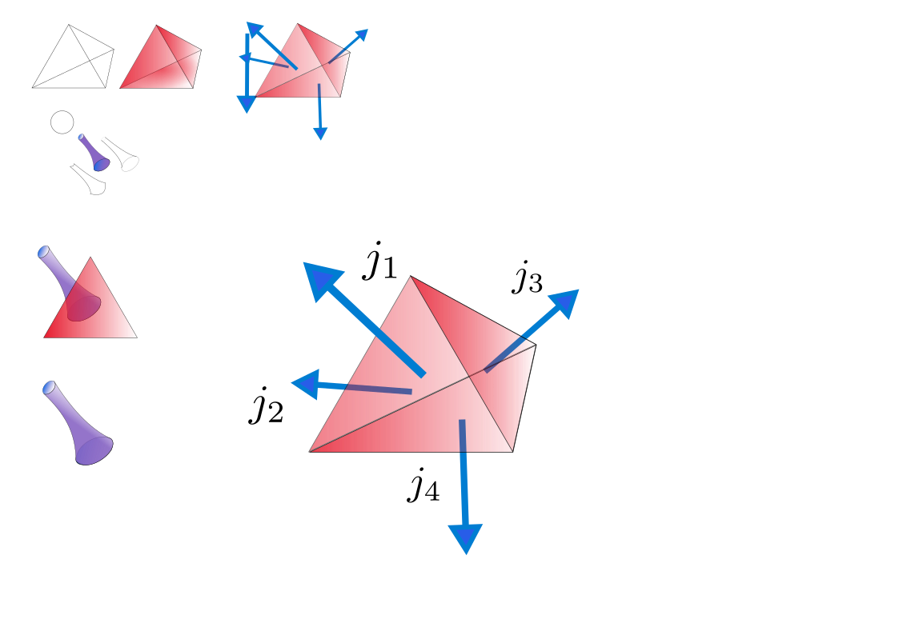
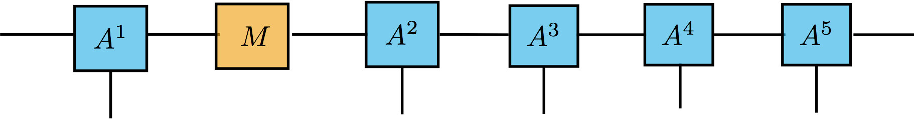
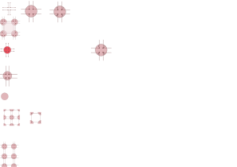
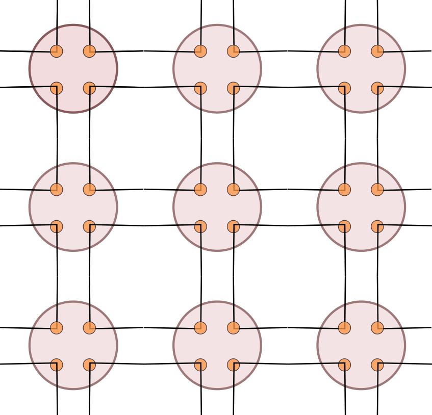

Loop Quantum Gravity · Symmetry-Protected Topological Phases
A new mechanism for the cosmological arrow of time: a confinement-deconfinement transition in a $Z_2$ lattice gauge theory living on the spin networks of Loop Quantum Gravity.
01 — The Mystery
Every known law of physics is time-symmetric — run the equations in reverse and they remain valid. Yet the universe has a definite past and future. This asymmetry is called the Arrow of Time.
The standard explanation invokes thermodynamics: entropy increases, so the direction of increasing disorder marks forward time. But this only pushes the question back — why did the universe start in such an exceptionally low-entropy state?
We propose a different origin. The arrow of time is not a statistical accident but a symmetry-breaking transition baked into the fabric of quantum geometry itself — a phase transition in which a local $Z_2$ time-reversal symmetry spontaneously selects a preferred direction.
Entropy increases in isolated systems. Standard explanation — but requires a fine-tuned low-entropy initial state.
On the largest scales the universe has a single preferred time direction. Why is it uniform across causally disconnected regions?
A $Z_2$ gauge transition in quantum gravity selects a global arrow — no fine-tuning, topologically protected.
02 — Loop Quantum Gravity
In Loop Quantum Gravity, space is not a smooth continuum — it is a discrete graph. Each edge carries a quantum number $j \in \{0, \tfrac{1}{2}, 1, \tfrac{3}{2}, \ldots\}$ representing an area quantum, and each vertex carries an intertwiner encoding the local geometry (volume) of that region.

Classical general relativity treats spacetime as a smooth 4-manifold. LQG replaces this with a combinatorial structure. A spin network $\Gamma$ is a graph whose edges $e$ are labelled by $SU(2)$ representations $j_e$ and whose vertices $v$ are labelled by intertwiners $\iota_v$ — invariant tensors that "couple" the adjacent edges consistently.
The area of a surface punctured by edge $e$ is $A_e = 8\pi\gamma\, l_p^2 \sqrt{j_e(j_e+1)}$, and the volume of a region around vertex $v$ is determined by $\hat{V} \propto |\hat{J}_1\cdot(\hat{J}_2\times\hat{J}_3)|^{1/2}$. Spacetime geometry is thus quantised at the Planck scale ($l_p \approx 10^{-35}\ \mathrm{m}$).
03 — The Mechanism
"Gauging" a symmetry means promoting it from a global rule (the same everywhere) to a local rule (independently applied at every point). We gauge the $Z_2$ time-reversal symmetry on the spin network — introducing an independent $\pm 1$ degree of freedom at every edge.



Local time-reversal symmetry is unbroken. The $Z_2$ gauge field is disordered; no preferred direction of time exists. This is the pre-geometric, pre-Big-Bang state — a superposition of all possible time orientations.
Time-reversal symmetry is spontaneously broken. The CZX SPT phase emerges, providing topological protection of the coherent time orientation. The sign of the tetrad determinant is fixed globally — our experienced arrow of time.
04 — Key Equations
Five equations capture the core of the construction, from the quantum geometry of a vertex to the order parameter that detects the emergence of time's arrow.
The quantum volume of a region around vertex $v$ is:
where $\hat{J}_i$ are angular-momentum operators on edges meeting at $v$, $\gamma$ is the Barbero-Immirzi parameter, and $l_p$ is the Planck length. Under time-reversal $\mathcal{T}$, the operator $\hat{Q} = \epsilon^{ijk}\hat{J}_i\hat{J}_j\hat{J}_k$ changes sign — so time-reversal flips the orientation of the quantum volume.
For four edges with $j=\tfrac{1}{2}$, the two physical intertwiner states are:
These two states form an orthonormal basis for the $SU(2)$-singlet subspace — a single effective qubit per vertex that encodes the local time orientation.
Assign a $Z_2$ variable $\sigma_e \in \{+1,-1\}$ to each edge. The effective action is:
The product is over all four edges of a plaquette $\square$. This is exactly a $\mathbb{Z}_2$ lattice gauge theory — the simplest gauge theory, and the universality class of the Ising model in a transverse field.
The phase is detected by the Wilson loop along a closed path $\gamma$:
Area law ($A$) signals confinement; perimeter law ($P$) signals deconfinement. This order parameter is consistent with Elitzur's theorem: no local gauge-dependent observable can acquire a non-zero expectation value, but the non-local Wilson loop can.
In the deconfined phase the $Z_2$ field fixes the sign of $\det(e)$ globally. Since $\det(e) = \pm\sqrt{-g}$, this is precisely the macroscopic statement that all local light cones are consistently oriented — a coherent cosmological arrow of time.
05 — Go Deeper
Detailed derivations, the CZX–intertwiner isomorphism, 3D SPT classification, and supplementary calculations are available in the full manuscript.